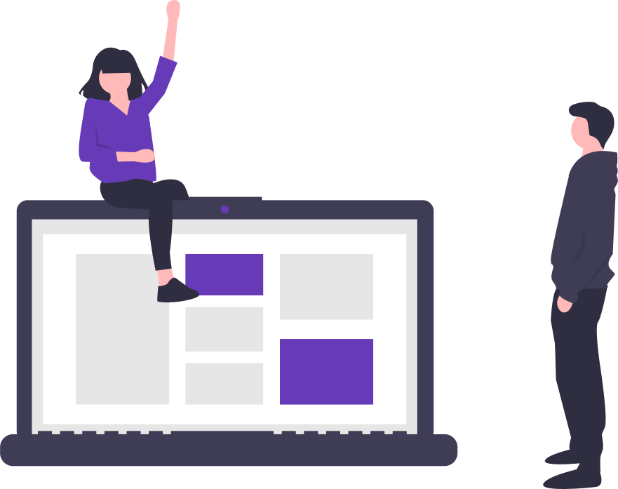

<mat-toolbar color="primary" class="mat-elevation-z6">
  <mat-toolbar-row>
    My App
  </mat-toolbar-row>
</mat-toolbar>
<div class="get_Started">
  <div class="get_started_image">
    
  </div>
  <div class="get_started_button">
    <button mat-flat-button color="accent" routerLink="/instructions">Get Started Now</button>
  </div>
</div>
<router-outlet></router-outlet>
